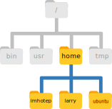

4 Files & Folders
- Understand the hierarchical structure of filesystems and how the location of files and directories is specified.
- Recognise when
/is used to specify the root directory or to separate directories. - Navigate the filesystem using the commands
pwd,lsandcd. - Create, move, copy and remove files and directories using the commands
mkdir,rmdir,rm,cpandmv.
4.1 Working Directory
The part of the operating system responsible for managing files and directories is called the filesystem. It organizes our data into files, which hold information, and directories (also called folders), which hold files or other directories.
These directories are orgainsed in a hierarchical way, which we can represent as a tree. Take the following image as an example:

This is illustrating the location of the home directories for three users called “larry”, “imhotep” and “ubuntu”. We can see that each of their home directories is within another directory called home. And finally, the home directory is located in the so-called root of the filesystem, represented by a / slash. The root is the top-most directory where everything for our operating system is stored in (it’s not possible to go “above” this special root directory).
When we use the shell, we need to specify the location of files and directories using an “address” (similarly to how you specify an internet address to reach a given website). Let’s explore this from our shell terminal.
First let’s find out where we are by running a command called pwd (which stands for “print working directory”). Directories are like places - at any time while we are using the shell we are in exactly one place, called our current working directory. Commands mostly read and write files in the current working directory, so knowing where you are before running a command is important.
pwd/home/ubuntuHere, the computer’s response is /home/ubuntu, which is our home directory, the default when opening a new shell terminal. The name “ubuntu” is our username.
If the user imhotep was logged in, they would see /home/imhotep as their default working directory.
Notice how the location of this folder is specified:
/at the start specifies the root of the filesystem.homespecifies the folder “home” within the root./is a separator between the “home” folder and the next folder.ubuntuis the final folder specifying this location.
This way of representing file or directory locations is called a path.
/ Slash
Notice that there are two meanings for the / character. When it appears at the beginning of a file or directory name, it refers to the root directory. When it appears inside a name, it’s a separator.
The home directory path will look different on different operating systems. For a user named “larry”, on a Mac it would look like /Users/larry, and on Windows C:\Users\larry.
4.2 Listing Files
We can see the content of our current directory by running ls, which stands for “listing”:
lsDocuments Downloads Music Public
Desktop Movies Pictures TemplatesThe /home/ubuntu/ directory contains many familiar folders that are typical of a user’s home.
The data for this workshop is located in our Desktop, within a directory called data-shell. We can look at its contents passing a directory name as an argument to ls:
ls -F /home/ubuntu/Desktop/data-shellREADME.txt coronavirus/ molecules/ sequencing/ things.txtSee the filesystem exercise to test your knowledge.
4.3 Changing Directory
So far, we have been working from /home/ubuntu/. However, we can change our location to the Desktop/data-shell directory to do our work.
The command to change locations is cd (“change directory”) followed by a directory name to change our working directory.
cd /home/ubuntu/Desktop/data-shell/We can check with pwd that we are in the correct directory. We can also run ls again to see the files within our current directory.
What if we now wanted to go to the molecules directory? We could do:
cd /home/ubuntu/Desktop/data-shell/molecules/However, that’s a lot of typing! Instead, we can move to that directory by specifying its location relative to our current directory. So, if our current directory was /home/ubuntu/Desktop/data-shell/ we could just do:
cd moleculesIn conclusion, there are two ways to specify directory names:
- An absolute path includes the entire path (or location) from the root directory, which is indicated by a leading slash. The leading
/tells the computer to follow the path from the root of the file system, so it always refers to exactly one directory, no matter where we are when we run the command. - A relative path tries to find that location from where we are (our current directory), rather than from the root of the file system.
We now know how to go down the directory tree, but how do we go up? We might try the following:
cd data-shell-bash: cd: data-shell: No such file or directoryBut we get an error! Why is this? With our methods so far, cd can only see sub-directories inside your current directory. To move up one directory we need to use the special shortcut .. like this:
cd .... is a special directory name meaning “the directory containing this one”, or more succinctly, the parent of the current directory. Sure enough, if we run pwd after running cd .., we’re back in /home/ubuntu/Desktop/data-shell.
~ Home Shortcut
The shell interprets the character ~ (tilde) at the start of a path to mean “the user’s home directory”. In our example the ~ is equivalent to /home/ubuntu.
Sometimes file and directory names get too long and it’s tedious to have to type the full name, for example when moving with cd.
We can let the shell do most of the work through what is called tab completion. Let’s say we are in the /home/ubuntu/Desktop/data-shell and we type:
ls moland then press the Tab ↹ key on the keyboard, the shell automatically completes the directory name:
ls molecules/If we press Tab ↹ again it does nothing, since there are now multiple possibilities. In this case, quickly pressing Tab ↹ twice brings up a list of all the files.
Alternatively, some people prefer that repeatedly pressing Tab ↹ cycles through the different file options. To set this up, see this StackExchange post: Terminal autocomplete: cycle through suggestions
See the file paths exercise to test your knowledge.
4.4 Creating directories
We now know how to explore files and directories, but how do we create them in the first place?
First, we should see where we are and what we already have. Let’s go back to our data-shell directory and use ls to see what it contains:
cd ~/Desktop/data-shell
lsREADME.txt coronavirus molecules sequencingNow, let’s create a new directory called thesis_notes using the command mkdir (“make directory”):
mkdir thesis_notesThe new directory is created in the current working directory:
lsREADME.txt coronavirus molecules sequencing thesis_notes things.txtNote that using the shell to create a directory is no different than using a file explorer. If you open the current directory using your operating system’s graphical file explorer , the results directory will appear there too.
While the shell and the file explorer are two different ways of interacting with the files, the files and directories themselves are the same.
Complicated names of files and directories can make your life painful when working on the command line.
Here are some useful tips for naming your files:
- Don’t use spaces.
Spaces can make a name more meaningful, but since spaces are used to separate arguments on the command line it is better to avoid them in names of files and directories. You can use-or_instead (e.g.thesis_notes/rather thanthesis notes/). - Don’t begin the name with
-(dash).
Commands treat names starting with-as options. - Only use letters, numbers,
.period,-hyphen and_underscore.
Many other characters (such as!,@,$,", etc.) have special meanings on the command line and can cause your command to not work as expected or even lead to data loss.
If you need to refer to names of files or directories that have spaces or other special characters, you should surround the name in quotes ("").
You may have noticed that all of the files in our data directory are named “something dot something”. For example README.txt, which indicates this is a plain text file.
The second part of such a name is called the filename extension, and indicates what type of data the file holds. Here are some common examples:
.txtis a plain text file..csvis a text file with tabular data where each column is separated by a comma..tsvis like a CSV but values are separated by a tab..logis a text file containing messages produced by a software while it runs..pdfindicates a PDF document..pngis a PNG image.
This is just a convention: we can call a file mydocument or almost anything else we want. However, most people use two-part names most of the time to help them (and their programs) tell different kinds of files apart.
This is just a convention, albeit an important one. Files contain bytes: it’s up to us and our programs to interpret those bytes according to the rules for plain text files, PDF documents, configuration files, images, and so on.
Naming a PNG image of a whale as whale.mp3 doesn’t somehow magically turn it into a recording of whalesong, though it might cause the operating system to try to open it with a music player when someone double-clicks it.
4.5 Moving & Renaming
In our data-shell directory we have a file called things.txt, which contains a note of books to read for our thesis. Let’s move this file to the thesis_notes directory we created earlier, using the command mv (“move”):
mv things.txt thesis_notes/The first argument tells mv what we’re “moving”, while the second is where it’s to go. In this case, we’re moving things.txt to thesis_notes/. We can check the file has moved there:
ls thesis_notesthings.txtThis isn’t a particularly informative name for our file, so let’s change it! Interestingly, we also use the mv command to change a file’s name.
Here’s how we would do it:
mv thesis_notes/things.txt thesis_notes/books.txtIn this case, we are “moving” the file to the same place but with a different name. Be careful when specifying the target file name, since mv will silently overwrite any existing file with the same name, which could lead to data loss.
The command mv also works with directories, and you can use it to move/rename an entire directory just as you use it to move an individual file.
See the renaming files exercise to test your knowledge.
4.6 Copying Files and Directories
The cp command works very much like mv, except it copies a file instead of moving it. For example, let’s make a copy of our books.txt file:
cp thesis_notes/books.txt books_copy.txt
lsREADME.txt books_copy.txt coronavirus molecules sequencing thesis_notesUnlike the mv command, in this case the original file remains in the original directory:
ls thesis_notes/books.txtSee the copying directories and copying multiple files exercises to test your knowledge.
4.7 Removing Files and Directories
The Unix command used to remove or delete files is rm (“remove”). For example, let’s remove one of the files we copied earlier:
rm backup/cubane.pdbWe can confirm the file is gone using ls backup/.
What if we try to remove the whole backup directory we created in the previous exercise?
rm backuprm: cannot remove `backup': Is a directoryWe get an error. This happens, because rm by default only works on files, not directories.
rm can remove a directory and all its contents if we use the recursive option -r, and it will do so without any confirmation prompts:
rm -r backupGiven that there is no way to retrieve files deleted using the shell, rm -r should be used with great caution (you might consider adding the interactive option rm -r -i).
To remove empty directories, we can also use the rmdir command. This is a safer option than rm -r, because it will never delete the directory if it contains files, giving us a chance to check whether we really want to delete all its contents.
The Unix shell doesn’t have a trash bin that we can recover deleted files from (though most graphical interfaces to Unix do).
Instead, when we delete files, they are unlinked from the file system so that their storage space on disk can be recycled. Tools for finding and recovering deleted files do exist, but there’s no guarantee they’ll work in any particular situation, since the computer may recycle the file’s disk space right away.
4.8 Wildcards
Wildcards are special characters that can be used to access multiple files at once. The most commonly-used wildcard is *, which is used to match zero or more characters.
Consider these examples referring to files in the molecules directory:
*.pdbmatches every file that ends with ‘.pdb’ extension.p*.pdbonly matchespentane.pdbandpropane.pdb, because the ‘p’ at the front only matches filenames that begin with the letter ‘p’.
Another common wildcard is ?, which matches any character exactly once. For example:
?ethane.pdbwould only matchmethane.pdb(whereas*ethane.pdbmatches bothethane.pdb, andmethane.pdb).???ane.pdbmatches three characters followed byane.pdb, givingcubane.pdb ethane.pdb octane.pdb.
When the shell sees a wildcard, it expands the wildcard to create a list of matching filenames before running the command that was asked for. As an exception, if a wildcard expression does not match any file, Bash will pass the expression as an argument to the command as it is.
For example typing ls *.pdf in the molecules directory (which does not contain any PDF files) results in an error message that there is no file called *.pdf.
The * wildcard is by far the most commonly used. However, there are other wildcards available, and you can find more information about them on the GNU Wildcard documentation page.
See the wildcards exercise to test your knowledge.
4.9 Finding Files
Often, it’s useful to be able to find files that have a particular pattern in their name. We can use the find command to achive this. Here is an example, where we try to find all the CSV files that exist under our data-shell folder:
find . -type f -name "*.csv"./coronavirus/variants/india_variants.csv
./coronavirus/variants/ireland_variants.csv
./coronavirus/variants/southafrica_variants.csv
./coronavirus/variants/switzerland_variants.csv
./coronavirus/variants/uk_variants.csv
./sequencing/sample_metadata.csvIn this case, we used the option -type f to only find files with the given name. We could use the option -type d if we wanted to instead find directories only. If we wanted to find both files and directories, then we can omit this option.
We used -name to specify the name of the file we wanted to search for. Similarly to ls, you can use the * wildcard to match any number of characters. In our example, we used *.csv to find all files with the .csv file extension.
Finally, we searched for files from the current location we were in. That’s what the . in the command above means: search for files from the current directory. If we wanted to find files in a different directory without having to cd into it first, we could replace . with the name of the directory we want to search from. For example, if you only wanted to search for CSV files in the coronavirus folder:
find coronavirus -type f -name "*.csv"coronavirus/variants/india_variants.csv
coronavirus/variants/ireland_variants.csv
coronavirus/variants/southafrica_variants.csv
coronavirus/variants/switzerland_variants.csv
coronavirus/variants/uk_variants.csvNotice how the sequencing/sample_metadata.csv file is not returned in this case.
The find command has many more options to configure the search results (you can check these with man find). One option that can sometimes be useful is to find AND delete all the files. For example the following command would delete all files with .txt extension:
find . -type f -name "*.txt" -deleteAs you can imagine, this feature is very useful but also potentially dangerous as you may accidentally delete files you didn’t intend to (“with great power comes great responsibility”, as they say ). So, always make sure to run the command without the -delete option first to check that only the files you really want to delete are being matched.
4.10 Exercises
4.11 Summary
- The file system is organised in a hierarchical way.
- Every user has a home directory, which on Linux is
/home/username/. - Locations in the filesystem are represented by a path:
- The
/used at the start of a path means the “root” directory (the start of the filesystem). /used in the middle of the path separates different directories.
- The
- Some of the commands used to navigate the filesystem are:
pwdto print the working directory (or the current directory)lsto list files and directoriescdto change directory
- Directories can be created with the
mkdircommand. - Files can be moved and/or renamed using the
mvcommand. - Files can be copied with the
cpcommand. To copy an entire directory (and its contents) we need to usecp -r(the-roption will copy files recursively). - Files can be removed with the
rmcommand. To remove an entire directory (and its contents) we need to userm -r(the-roption will remove files recursively).- Deleting files from the command line is permanent.
- We can operate on multiple files using the
*wildcard, which matches “zero or more characters”. For examplels *.txtwould list all files that have a.txtfile extension. - The
findcommand can be used to find the location of files matching a specific name pattern.